శ్రీ చిదానంద ఆశ్రమం స్థాపన

అత్యంత తపోనిష్ఠా గరిష్ఠులైన శ్రీ చిదానంద సరస్వతీ స్వామివారు ఈ యాశ్రమమును 1952న స్థాపించిరి. ఇందు శ్రీ శృంగేరీ పీఠాధిపతులచే పంపబడిన శ్రీ శంకరాచార్యులవారి పాల రాతి విగ్రహము ప్రతిష్టింపబడినది. మారుచున్న జన జీవన విధానమును తలపోసియోయన్నట్లు చిరునగవు చిందులాడు ఈ సుందరమూర్తి నాటి నుండి పూజల నందుకొనుచున్నది.
ఈ యాశ్రమమునకు ప్రక్కనే శ్రీ సోమలింగేశ్వరస్వామి మొదలగు పదునాల్గు దేవాలయముల నిర్మాణములుకూడ శ్రీ చిదానంద సరస్వతీ స్వామివారి ఆధ్వర్యమున ఆ కాలముననే జరిగినవి.
ఈ రెండు సంస్థలకును ఎకరము పైగా స్థలమును సమీపమునగల కేసరపల్లి నివాసియైన శ్రీ దోనపల్లి అనంతకోటి పద్మనాభంగారు దానము చేసిరి. ఈ యాశ్రమమునకు వెనుక దేవాలయ పూజారి నివసించుటకై ఒక యిల్లు నిర్మిపబడియున్నది. పై దేవాలయ సముదాయము నిత్య నైవేద్య దీపారాధనల నందుకొనుచు శోభిల్లుచున్నది.
ఆశ్రమ స్థాపకులైన శ్రీ చిదానంద సరస్వతీ స్వాములవారు పూర్వ నివాసమైన పశ్చిమ గోదావరి జిల్లా “ పూళ్ల " గ్రామములో కుసుమ హర నాథాశ్రమ మనుపేర నొక యాశ్రమము స్థాపించి ఏకాహ సప్తాహాది సంకీర్తన కార్యక్రమముల ద్వారా భక్తి ప్రచారము గావించుచు భజన సంప్రదాయమునకు కూడ పాదుచేసి నీరు పోసి కొంతవరకు సంరక్షించిరి.
ప్రతినిత్యం అన్న దానము చేయుచుండుటయేకాక ప్రతి సంవత్సరం వేద సభలను పండిత సమావేశములను నిర్వహించుచు, వేద శాస్త్ర విద్వాంసులకు సన్మానము చేయుచుండెడివారు. ఉభయ గోదావరి - కృష్ణా - ఖమ్మం జిల్లాలో వీరి శిష్య బృందము కలదు. వారు నేటికిని యిచటికి వచ్చుట ఆచారముగా చేసికొని శ్రీవారి ఆబ్దికారాధనలను కావించుచున్నారు.
ఈ యాశ్రమము స్థాపించుటకు ముందు వీరు హృషీకేశమున తురీయాశ్రమము స్వీకరించి బ్రహ్మజ్ఞాన సంపన్నులగు శ్రీ శ్రీ శ్రీ ప.ప. జ్ఞానానంద సరస్వతీ స్వాములవారి వద్ద ప్రణవోపదేశము పొందిరి. వీరు కొంతకాలము హృషీకేశములో, కొంతకాలము హరిద్వారములో, కొంతకాలము హిమవత్పర్వతములందును, సుమారు ముప్పదేండ్లు యోగనిష్టలో గడపిరి. ఆశ్రమ స్వీకరణకు ముందే " అన్నమున”కు స్వస్తి చెప్పిరి. కొంచెము కల కండయో, బెల్లమో తిని నీరు ద్రావి జీవించినారు. అందుచే వీరికి బెల్లం స్వాముల వారని పేరువచ్చినది. ఆశ్రమమును దర్శించు భక్తుల కెల్లరకు సంతుష్టిగా భోజనము పెట్టుచుండెడివారు.
వీరు సుమారు నూరేండ్లు జీవించిన పూర్ణాయుర్దాయులు. ఈ ఆశ్రమమునకు వారే “చిదానందాశ్రమ” మని నామకరణం చేసి 3 యకరముల భూ వసతి, శంకరమఠము, భోజనశాల, అతిథి గృహములకు శాశ్వత కట్టడములు చేసిరి. తుది గడియవరకు యోగనిష్ట కలిగి ఉల్లాసముతో జీవించుచు, ఆశ్రమమునకు ధర్మకర్తలను నియమించి 1977లో బ్రహ్మైక్యము చెందిరి. వారి శిష్యులు ఆశ్రమావరణ యందే సమాధిని నిర్మించి అందు వారి ప్రతిమతో సహా శివలింగము ప్రతిష్టించిరి.
ఆల్బమ్
ఫోటోలు
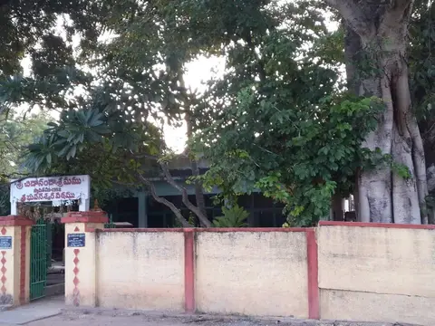
ఆశ్రమంలో ఉత్సవవేళ నాదస్వరం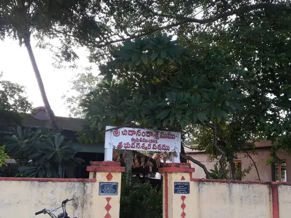
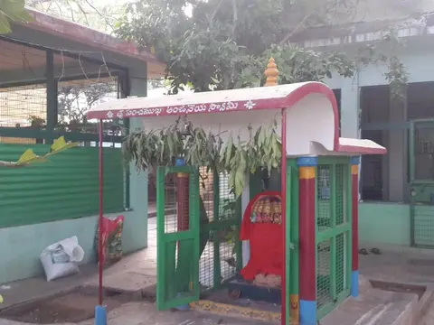
శ్రీ పంచముఖ ఆంజనేయ స్వామి దేవాలయం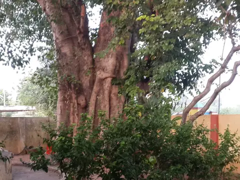
శ్రీ చిదానంద సరస్వతి స్వామి తపస్సు చేసిన పుణ్యస్థలం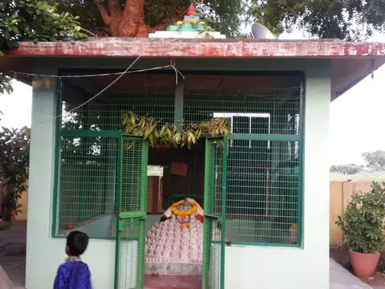
శ్రీ రుద్రమండలం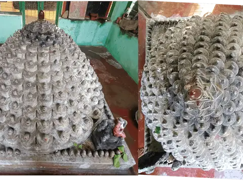
17 ఆవరణలతో ఉన్న 367 లింగాలతో ఉన్న ఋతురసాత్మక రుద్రమండలం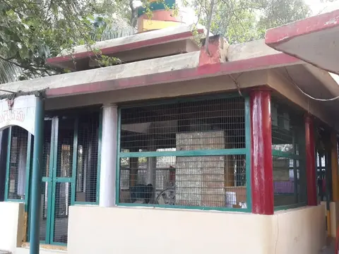
షోడశ స్తంభ యాగశాల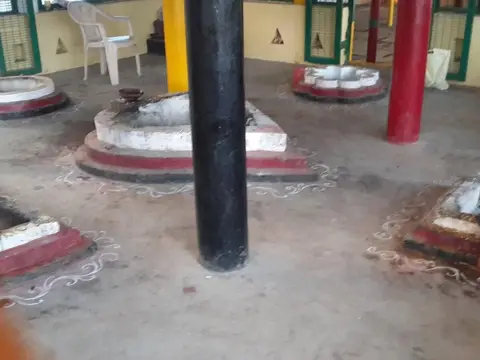
యాగశాల అంతర చిత్రం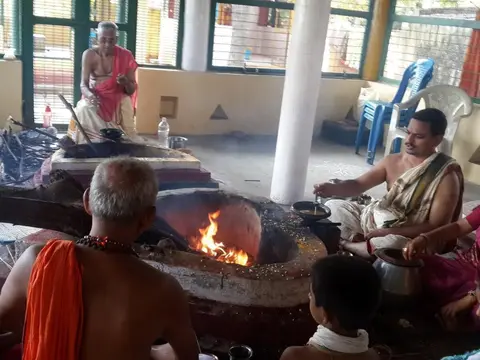
యాగ చిత్రమాలిక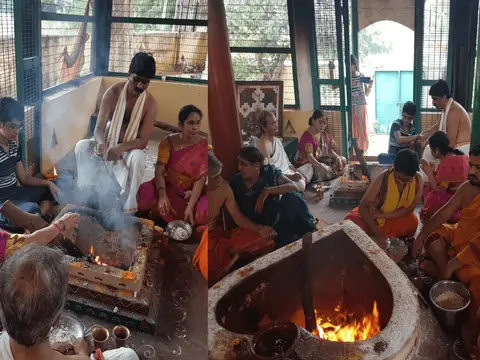
యాగ చిత్రమాలిక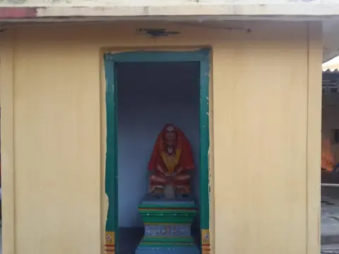
శ్రీ చిదానంద సరస్వతీ స్వామి వారి బృందావనం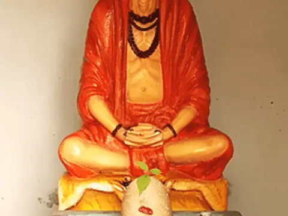
శ్రీ చిదానంద సరస్వతీ స్వామి వారి బృందావనం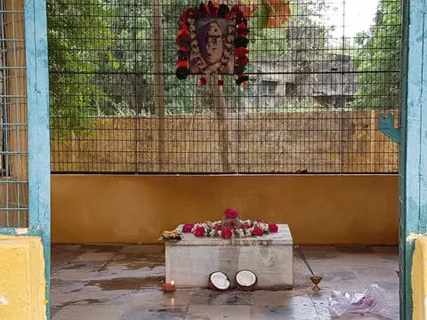
శ్రీ సత్యానంద భారతి స్వామి వారి బృందావనం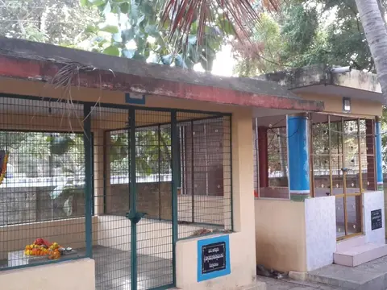
గురు మండలాలు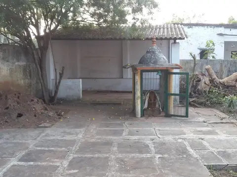
నాగదేవత నిలయం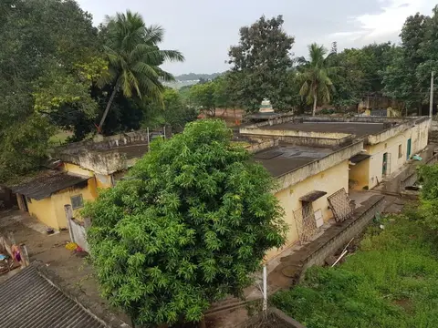
ఆశ్రమ ప్రాంగణం విహంగ వీక్షణం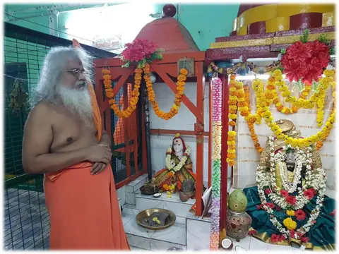
శ్రీ భువనేశ్వరిమాత సేవలో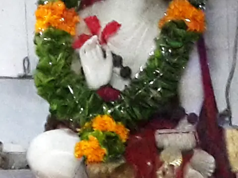
ఆదిశంకర భగవత్పాదులు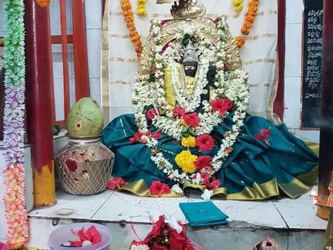
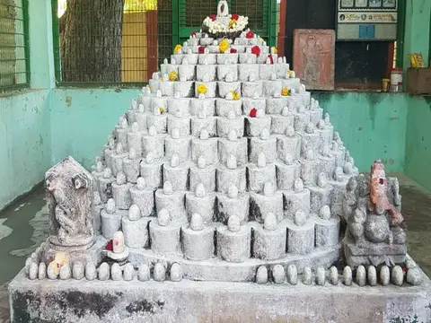
మహన్యాస పూర్వక రుద్రాభిషేక సమయ దృశ్యమాలిక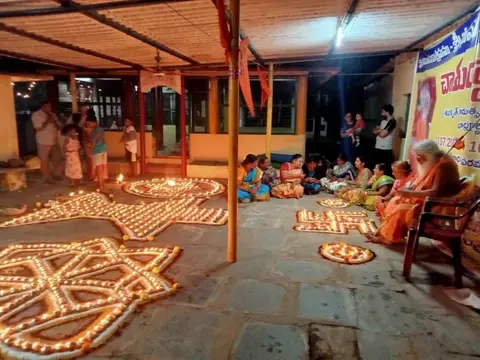
ఉత్సవ వేళ దీపోత్సవం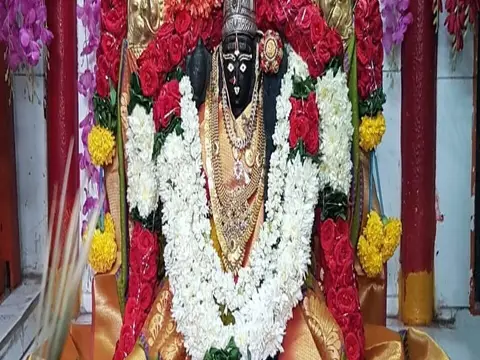
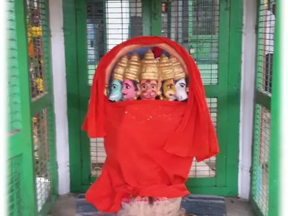
శ్రీ పంచముఖ ఆంజనేయ స్వామి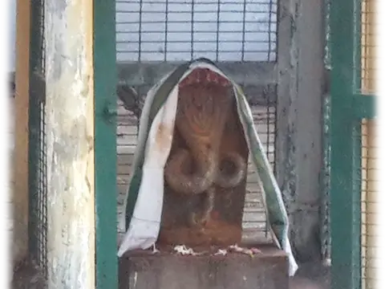
శ్రీ నాగేంద్ర స్వామి